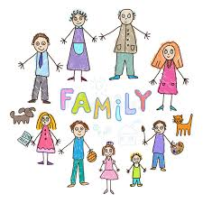
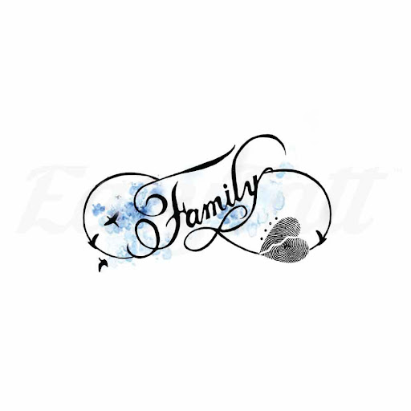
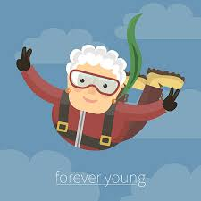
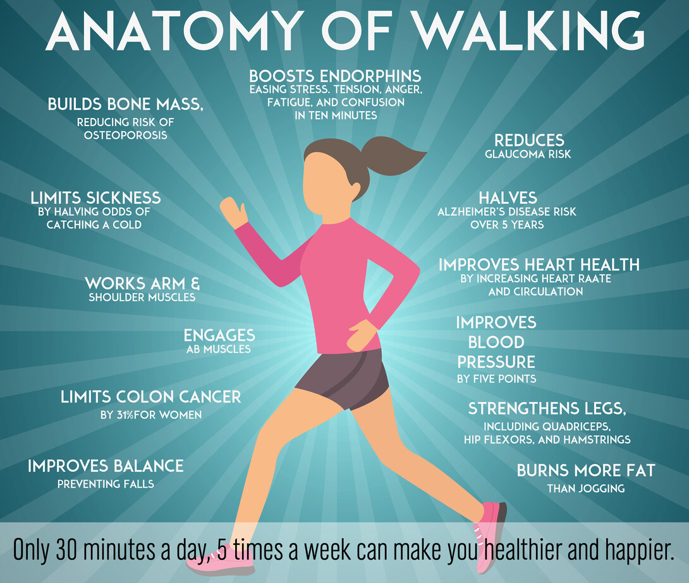
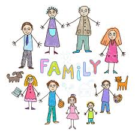
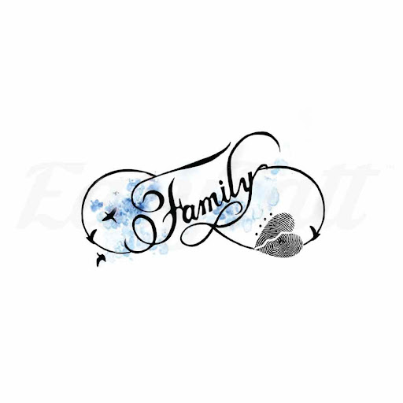
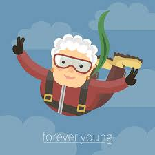
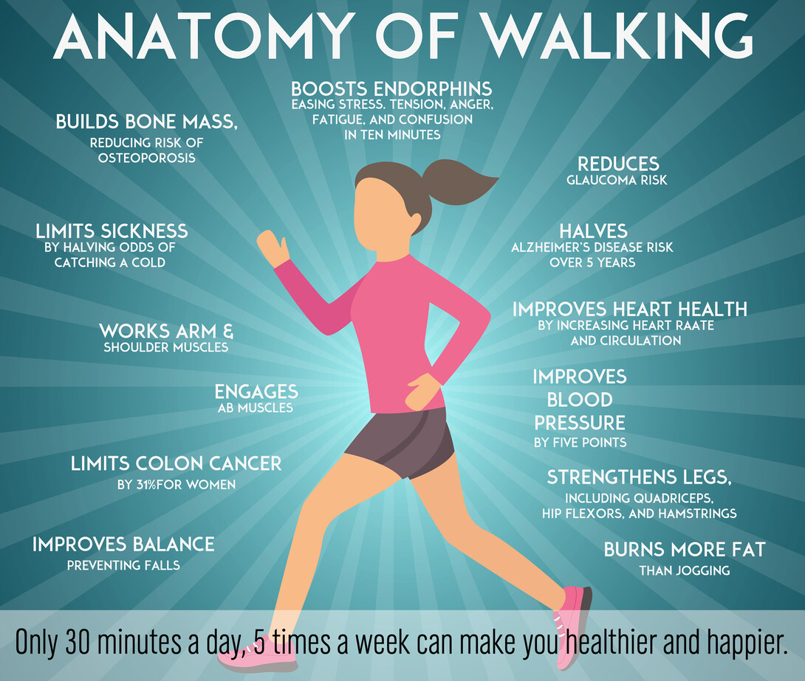
 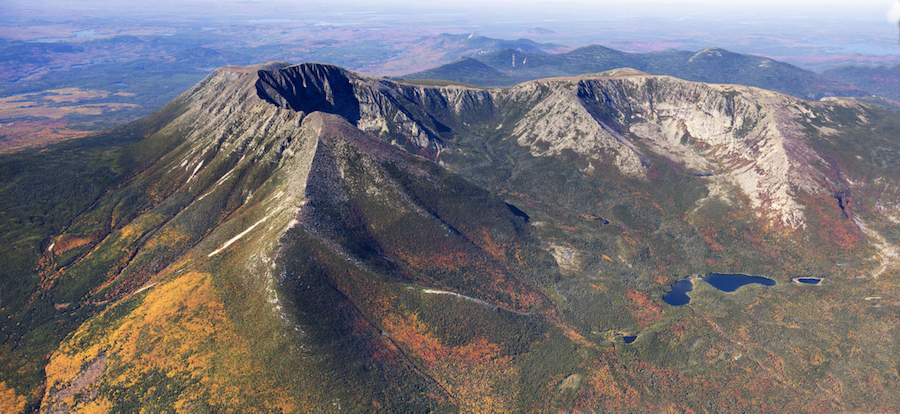
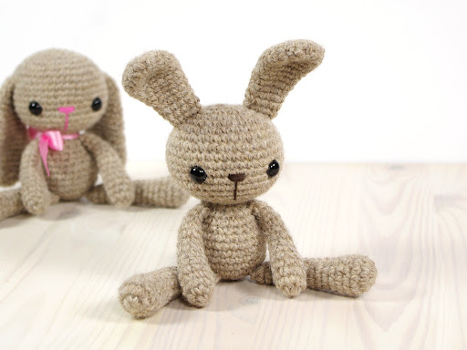
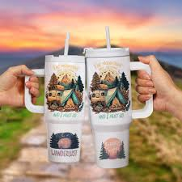
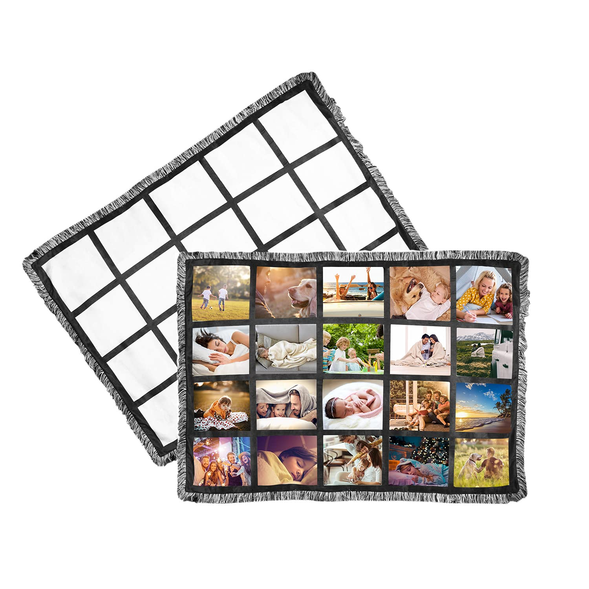
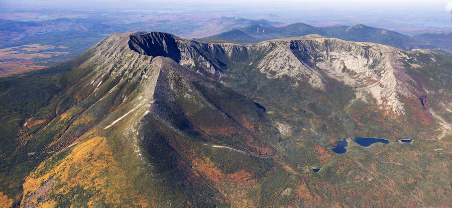
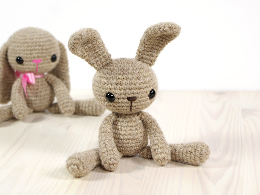
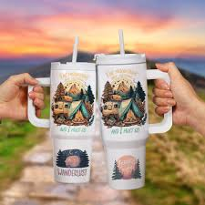
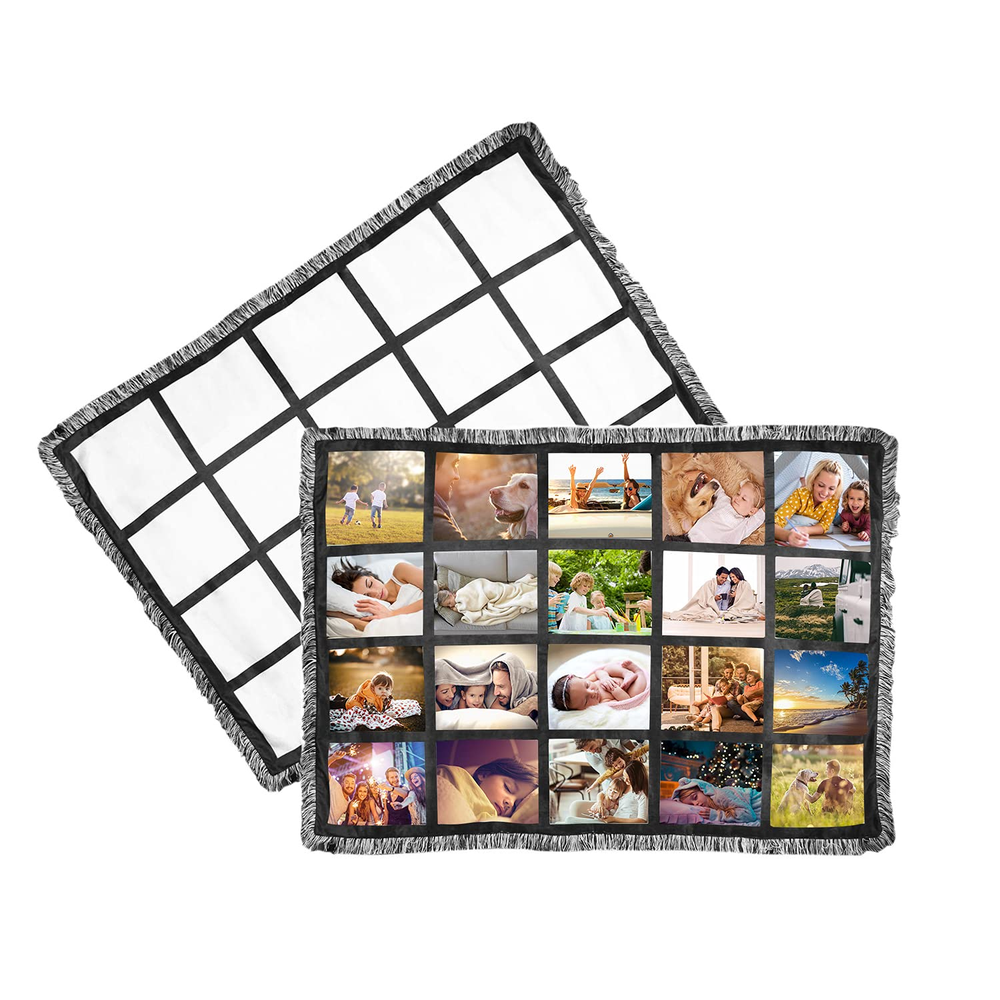

Welcome to
Roberta's Portfolio!
About me
I am 59 years young!
I am currently residing at Southern Maine Womens ReEntry Center in Windham because of a bad choice I made. I am in the process of serving for that bad choice and choosing to change my life in a positive way!
I am originally from a small town in northern Aroostook County Maine. I have lived there pretty much my whole life. I have been married for 38 years and have 4 sons and 12 amazing grandchildren.
My family is my world and I absolutely love being a Grammy :)!!
You can click on the link below to see more information about the county that I live in!
While here I have been involved in many programs like Book Club, Crocheting Class, Living Classroom, Volunteering where ever and whenever I can. I have also met some genuine good ladies that I play cards with and conversate with, some have become very special to me and I hope to stay in touch with them on the outside! I didn't plan on making friends while incarcerated but I feel lucky that I have met and befriended these additional special people in my life!
My favorite program is my Yoga Class every Friday with instructor Jess. I look forward to yoga every week. Yoga helps ground me and is helping me heal mind, body and soul! I also enjoy walking outsite alot. I love the smell of the fresh air, flowers and just being outside. Walking clears my mind and allows me to reflect on the choices I have made in my life and eventually get me back and helps me think clearer.
I also started working for CTI Cleaning Services Monday thru Friday. Working makes me feel useful and helping give back. Plus helps the days go by a little faster and gets me away from all the drama that goes on in here :).
Visit Aroostook County Maine
Interests
- Hiking Go to All Trails.com
- I have hiked Mount Katahdin in Maine twice, once Hunt Trail with my son and aunt and second Knives Edge with my aunt. What a great experience and amazing views! I have also hiked alot of other trails in Northern Maine. So peaceful being out in nature and breathing the fresh air!
- Walking/Running
- For the last 5 years I have worked hard to get healthy and in shape and with the help of walking/running this has been possible! I feel so much healthier in mind and body!
- Cooking Go to All Recipes.com
- I have always loved cooking and trying new recipes. My family put together a family cookbook a few years back and all family members submitted some of our favorite recipes. Very special cookbook to me!
- Cake Decorating How to Decorate a Cake for Beginners
- I baked and decorated custom cakes for about 20+ years for my small business. Weddings, birthdays, retirements etc basically cakes for any occassion. Some customers challenged me with some unusual designs but I loved the challenge and always delivered an amazing cake! I also added edible paper generated on a printer that had edible ink. With this option I was able to create custom designs on the computer and print on edible paper then apply to a cake! I only decorate cakes now for my family and grandkids birthdays now but I may get back into doing cakes down the road?
- Graphic Design
- I create custom designs per customers requests for items that they wish to have applied to like tumblers, shirts, blankets etc.
- Crocheting
- I have always enjoyed crocheting blankets and have made myself one while here but since being incarcerated I have met so many ladies that are very talented and make stuffed animals and I would love to learn the process of making them someday.
- Reading
- I never had time to read basically because I was always taking care of everyone else and just never did. Since here I have read alot of books and I am enjoying getting back to reading plus it is calming and exciting at the same time depending on the book. I enjoy mystery and thriller books.
- Yoga Visit My Website "Heal Mind Body & Soul with Yoga!"
- Yoga is my favorite by far as I have written in the about me section! Very calming and helps heal mind body and soul!


Goals
- One current goal is to get thru the next couple of years of recovery and healing to able to go home to my family a better version of myself.
- Another goal is to start an online business for my crafting such as: Custom clothing, blankets, tumblers pretty much any products that can be designed and printed using sublimation printing and vinyl materials for resale. Also a laser engraver for making additional products such as cribbage boards, ceramic tiles, many wood products, metal engraving, leather patches for hats etc.
Skills
- Computer Graphic Designing
- Cake Decorating
- Crocheting
- Computer knowledge of various program or software
- Crafting with laser engraving machine, vinyl cutting machine, sublimatioin printer to tshirt and other items for design and resale
Why I am participating in this class?
I am participating in this class because I would like to design my own website for my online business to which I am in the process of creating. This helps make me one step closer to making my dream come true being able to start an online business.
What I hope to learn from this class.
This question goes pretty much with the one about why I am taking this class. What I hope to learn is to learn how to properly code and design a website page for my own business that will be easier for the consumer to browse and find items easy and complete online orders for me to fullfill. I realize online businesses start off slow but with time and more experience and with the help of this class I will be able to be successful starting a new business.